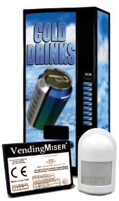

VendingMiser ®
VendingMiser reduces the energy consumption of a vending machine by up to 50% and decreases maintenance by £40-80 per year, all while maintaining the temperature of the product
|  |
How does it work?VendingMiser® uses a Passive Infrared (PIR) Sensor to monitor the surrounding area and power down the vending machine when the surrounding area is vacant.VendingMiser® also monitors the room’s temperature and automatically repowers the vending machine at 1-3 hour intervals (independent of occupancy) to ensure that the vended product remains at the correct temperature. VendingMiser® will never power down a vending machine while the compressor is running, eliminating compressor short cycling which damages the compressor and it will always allow a cooling cycle to run to completion before powering down – to make sure the product is kept at the right temperature. |
What are the benefits?
- Cost savings: It reduces the electrical cost of running a single machine by on average £100-150 per year.
- Environmental savings: it reduces greenhouse gas emissions by 1,000 kgs of CO2 and 3,600 grams of NOx a year.1
- Maintenance savings: it reduces annual maintenance costs by £40-80 per machine and increases the life expectancy of the machine.
What products can benefit from using VendingMiser®?
Any canned, snack, sweet or other type of refrigerated vending machine.
How easy is it to install?
VendingMiser® requires no expert knowledge to install and can be installed in under five minutes. VendingMiser® can be installed in virtually any location using our wall-mounted, weatherproof, easy-fit or low ceiling options.
Can I use VendingMiser® with multiple machines?
VendingMiser's® unique embedded Sensor Repeater allows a single PIR Sensor to link up to three VendingMiser® controlled vending machines.
What savings would I be likely to make?
Our existing customers see savings between 30-50%. Try our savings calculator to find out what savings you could make.
Are there any situations where VendingMiser® would not be appropriate?
The savings generated by using VendingMiser® are as a result of the surrounding area being unoccupied during periods of the day. A machine that was occupied 24 hours a day, 7 days a week would be unlikely to generate any savings.Also, machines containing perishable goods should be tested for suitability prior to using VendingMiser®.
Other energy saving products available:
VendingMiser® is part of a family of occupancy-based energy control products designed to save you money:CoolerMiser™: reduces the energy consumption of glass door fronted refrigerators.
PlugMiser™: reduces the energy consumption of electrical products.
Use the savings calculator to work out the energy savings that could be achieved in your company.
1 Based on occupancy and the Energy Information Administration's national average greenhouse gas emissions and electricity generation.